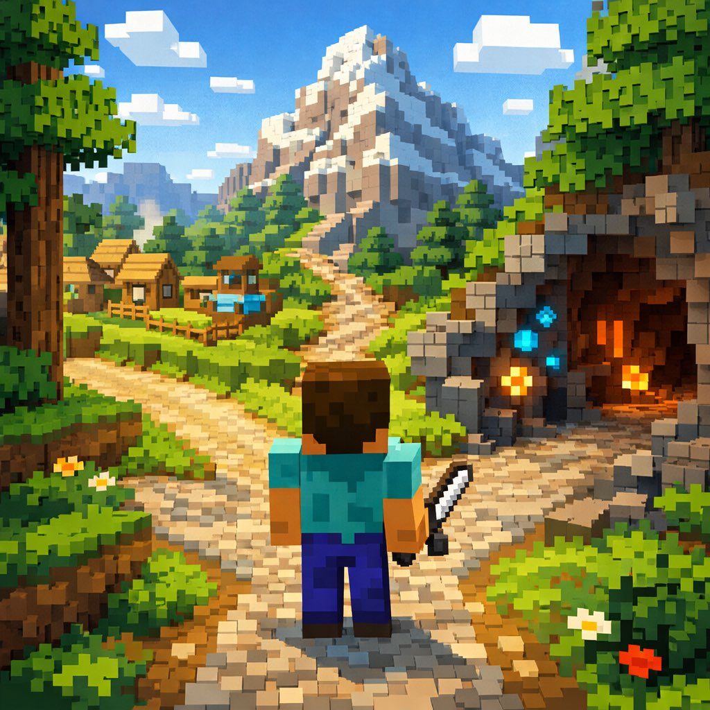
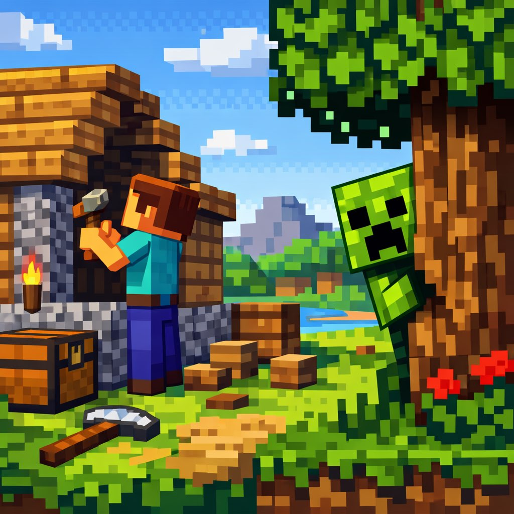
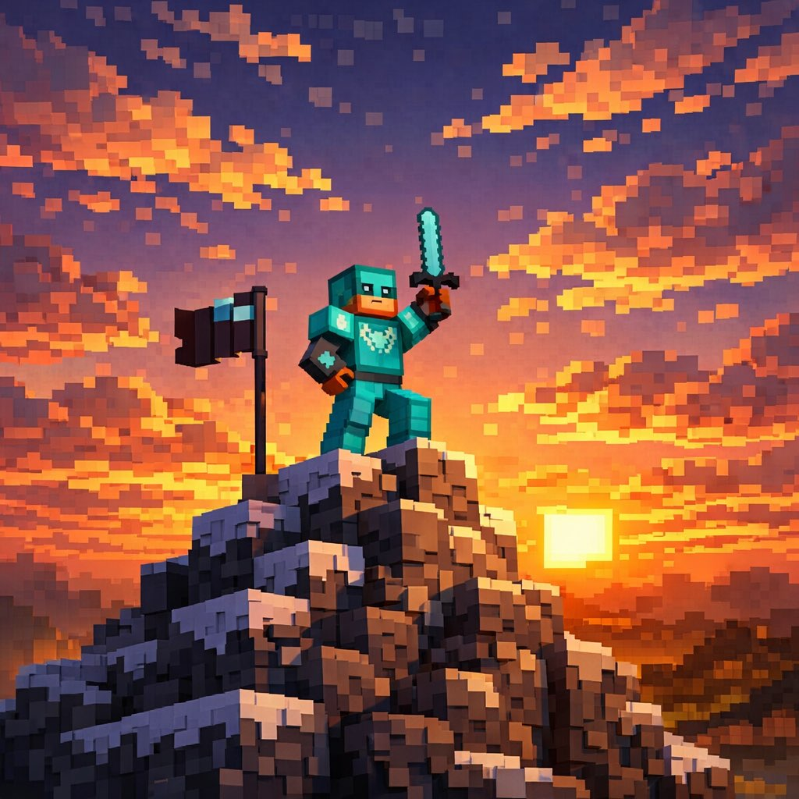

【系统提示】
你睁开眼睛，发现自己站在一片像素世界的十字路口。前方有三条路：左边通向一座烟囱冒烟的小村庄，中间是一座云雾缭绕的高山，右边是一个入口闪着矿石光芒的洞穴。你的背包里只有3块面包和一把木镐。
冒险开始了——你选哪条路？
【村庄路线】
你走进村庄，发现这里的村民都是方块人，但非常热情！村长方块大爷拉着你的手说："年轻人，我们村缺一个铁匠，你愿意留下吗？包吃包住，还有五险一金——虽然我们这里五险就是五面墙，一金就是一块金矿石。"
你正犹豫的时候，一只苦力怕从村口溜了进来……💥

【英雄时刻】
你举起木镐冲向苦力怕！就在它膨胀发光的一瞬间——你灵机一动，把背包里的面包塞进了它嘴里。苦力怕愣住了…然后它开始咀嚼…然后它露出了满足的表情。
原来苦力怕不是来搞破坏的，它只是饿了！从此你成了村庄的英雄，村民们给你建了一座大房子，苦力怕成了你的宠物，负责每天叫你起床（嘶嘶声比任何闹钟都好使）。
【战略撤退】
你拉着村长跑出了爆炸范围！💥 虽然村口的围墙被炸了一个洞，但所有人都安全。村长感动地说："年轻人，你的判断力比村里的铁傀儡还靠谱！"
你帮村民们重建了围墙，还设计了一个"苦力怕预警系统"——用红石电路做的。村民们推选你当了新村长！
【高山路线】
你开始爬山。爬到半山腰的时候，一只羊驼挡住了去路。它吐了你一脸口水，然后甩了甩毛，一副"这山是我开的"的表情。你注意到它脖子上挂着一个小箱子，里面似乎有东西在发光……
【以物易物】
你掏出一块面包。羊驼闻了闻，眼睛亮了！它把面包叼走，箱子掉了下来。打开一看——是一张"远古地图"，标注着山顶有一个"许愿台"！
你带着地图登上山顶。许愿台在夕阳下金光闪闪。你闭上眼许了一个愿望："我要找到最适合我的道路。"台子闪了一下光——你看到了山下的全景：村庄、矿洞、森林、海洋……整个世界都在你面前展开。
你突然明白了：登高不是为了看风景，是为了看清自己想去哪里。
【勇者登顶】
你绕过羊驼继续爬。山越来越陡，风越来越大。就在你快要放弃的时候——山顶出现了！上面有一个末影箱，里面是一套完整的钻石装备和一本附魔书。
你穿上钻石甲，站在山顶，整个像素世界尽收眼底。那只羊驼不知何时跟了上来，默默站在你身边，好像在说："不错嘛，小子。"从此你和羊驼成了搭档，一起探索这个世界。
【洞穴路线】
你走进洞穴，矿石的光芒照亮了四周。越走越深，你发现了一条岔路：左边传来叮叮当当的声音，像是有人在挖矿；右边传来奇怪的音乐声，像是……有人在开派对？🎵
【矿工之路】
你找到了一位老矿工，他正在用钻石镐开采绿宝石。老矿工看了你一眼说："木镐？年轻人，用木镐挖矿就像用筷子喝汤——理论上可以但没必要。"
他教你升级装备的方法，从木→石→铁→钻石，一步步提升。三天后你拥有了自己的第一把铁镐，一周后换成了钻石镐。老矿工拍了拍你的肩："记住，最值钱的不是钻石，是你学会挖钻石的本事。"
【地下派对】
你走向音乐声……发现了一群僵尸在开派对！😱 但别慌——它们穿着DJ打碟服装，手里拿着荧光棒，而且完全不攻击人。
原来这是一群"和平主义僵尸"，它们厌倦了追着玩家跑，决定转行做DJ。领头的僵尸递给你一杯"岩浆鸡尾酒"（其实是橙汁），说："人生不止有追杀和被杀，还有音乐和快乐！"
你在僵尸派对上跳了一晚上舞，第二天带着它们一起出了洞穴，开了像素世界第一家"地下音乐厅"。生意火爆，因为节目单上写着："全世界唯一由僵尸DJ驻场的音乐厅"。

🏆 结局：村庄英雄
你用一块面包化解了一场危机，成为了村庄的守护者。苦力怕"嘶嘶"每天准时叫你起床，村民们过着安居乐业的生活。
有时候，勇气不是冲上去打架，而是在危险面前想出不一样的解法。🍞💚
🍞成就解锁：面包外交官用食物化解了一场爆炸危机
🏆 结局：科技村长
你成为了村庄的新村长，用红石科技带领村民走向了现代化。苦力怕预警系统成了你的代表作，还被隔壁村庄高价购买了技术授权。
保护别人的最好方式，不是每次都冲在前面，而是建立一套让大家都安全的系统。🏘️⚡
🔧成就解锁：红石工程师用科技守护了整个村庄
🏆 结局：全局视野
你登上山顶，用一块面包换来了一张地图，用一个愿望换来了全局视野。你看到了整个世界的样子，也看清了自己想走的路。
有时候不急着走，先爬高看看全景，反而能找到最适合自己的方向。🗺️✨
🗺️成就解锁：战略家在行动之前先看清全局
🏆 结局：钻石勇者
你靠自己的毅力登上了山顶，获得了钻石装备，还收获了一个最忠诚的伙伴——那只傲娇的羊驼。你们一起环游像素世界，成了传说中的"钻石骑士和羊驼"。
最好的伙伴往往出现在你最不放弃的时候。💎🦙
💎成就解锁：永不放弃坚持到顶，获得最好的装备
🏆 结局：钻石矿工
你从木镐开始，一步步升级到钻石镐，最终成为了像素世界最富有的矿工。老矿工的话你一直记着：最值钱的不是钻石，是你挖钻石的本事。
成长没有捷径，但每一步提升都是你的。⛏️💎
⛏️成就解锁：大师矿工从木镐到钻石镐的完整升级之路
🏆 结局：地下音乐厅老板
你开了像素世界第一家"僵尸DJ音乐厅"，每晚座无虚席。僵尸们终于实现了音乐梦想，你也找到了一条谁都想不到的成功之路。
最好的机会藏在最奇怪的地方。敢去看看，才能发现不一样的世界。🎵🧟
🎵成就解锁：跨界企业家开创了僵尸DJ的新赛道